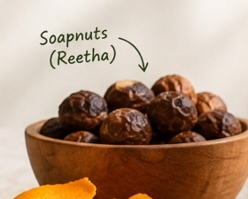

Natural Cleanser & LatherSoapnuts (Reetha)
Sapindus mukorossiSoapnuts have been used in Indian households for centuries. Their outer shells contain saponins — a natural surfactant that creates a gentle foam in water, lifting dirt and oils from fabrics naturally.
Naturally hypoallergenic, gentle on cotton, wool, and silk.